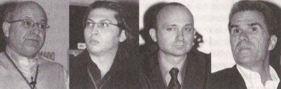
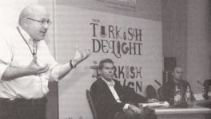

|
ADesign
Fair 2004 Panel tarihi: 08-10-2004
Yer: Harbiye Askeri Müzesi - Ahmet Fethi Paþa Salonu,
Ýstanbul
Moderatör:
Þahin Tulga, Genel Md., HP
Türkiye
Konuþmacýlar:
Alphan Manas, Teknoloji
Holding
Cengiz Ultav, Vestel
A.Þ.
Serhan Güzelderen, Beko
Elektronik A.Þ.
|  |
|
Cengiz
Ultav
|
Serhan
Güzelderen
|
Alphan
Manas
|
Þahin
Tulga
|
Hayatýmýza
yön veren tasarýmlar, tasarýmda teknolojinin kullanýlmasý,
teknolojik ürünlerin tasarlanma
süreci ve bu ürünlerin baþarýlý olmasý için uygulanacak pazarlama
prensipleri, 'Teknoloji ve Tasarým' panelinin ana konularý
oldu;
Þahin
Tulga:
Evet,
konumuz teknoloji ve tasarým. Þu alt konulara deðineceðiz:
Bir
defa tasarýmýn aþamalarý nelerdir? Tasarýmýn da bir süreci
var, hepiniz biliyorsunuz. Bu konuda çalýþýyorsunuz ya da
okula gidiyorsunuz. Bu süreç nedir? Bunu biraz irdeleyeceðiz.
Daha
sonra, bu süreçte teknoloji nasýl kullanýlýlyor. Özellikle,
iletiþim devrimi bu süreci nasýl etkiledi? 'Pozitif olarak
etkiledi' hatta belki 'negatif olarak etkiledi' diyenler çýkacak.
Onu irdeleyeceðiz.
Daha
sonra da teknolojik ürünlere bakacaðýz. Teknolojik ürünler,
benim mensup olduðum HP'nin ürünleri gibi, Beko, Vestel, Teknoloji
Holding gibi þirketlerin ürünleri nasýl tasarlanýyor ona bakacaðýz.
Ýlk
raundumuz bu. Sonra, ikinci raundda þunlara bakacaðýz: Bazý
teknoljik ürünler, ama tasarlanmýþ, harika görünüþlü, niye
baþarýsýz oldu? Pazarlama konseptleri çok önemli. Ýyi tasarlanmýþ
bir teknolojik ürünün baþarýlý olabilmesi için, nelere dikkat
etmek gerekli? Bunlara da bir bakacaðýz.
En son da panelistlerin faydalý gördüðü kitap, dergi gibi
kaynaklarý anlatmalarýný isteyeceðiz.
Þimdi,
ben ne zaman power point'le bir sunum yapacak olsam, bir hikaye
aklýma gelir. Katýldýðým bir konferansta, çok önemli bir yönetici,
konuþma yapmak için kürsüye gelirken elinde pek çok not taþýyordu.
Bir anda ayaðý takýldý ve sendeledi. Elindeki sunum kaðýtlarýný
hepsi etrafa saçýldý. Adam, kaðýtlara bir baktý hepsini yerde
býraktý ve kürsüye çýktý. Muhteþem bir konuþma yaptý. Ben
de o konuþmaya þahit olduðum için, onun gibi olmak istedim
ve kendimi yetiþtirmeye çalýþtým. O kiþi, benim için bir modeli
oldu. Ta ki, ayný kiþiyi yýllar sonra, baþka bir yerde ayný
numarayý tekrarlarken görene kadar. Böyle hikayeler anlattýðým
zaman, benim þirketimde herkes gülüyor.
Þimdi,
bakanýn biri toplamýþ etrafýna müsteþarlarýný, yardýmcýlarýný,
üst düzey yöneticilerini, onlara böyle hikayeler anlatýyor.
Soðuk hikayeler, ama bakan ya, herkes gülüyor. Bir kiþinin
gülmediði bakanýn dikkatini çekmiþ. 'Siz niye gülmüyorsunuz'
demiþ. 'Efendim, ben sizin bakanlýktan deðilim' demiþ adam
da. Siz de benim bakanlýktan olmadýðýnýz için, gülmeme hakkýna
sahipsiniz.
Evet,
bu gerçekten önemli bir konu, gerçekten çekici de bir konu.
Bence Türkiye'de bu konudaki en yetkin insanlar da aramýzda;
Önce
Cengiz Ultav. Cengiz Ultav benim için Cengiz Abi, ikimiz de
ayný liseden mezun olduk, Ankara Fen Lisesi'nden. Türkiye'de
tanýdýðým en parlak insanlardan biri. Orta Doðu Teknik Üniversitesi
Elektrik ve Elektronik Mühendisliði Bölümü'nden, lisansý ve
lisans üstü diplomasý var. Halen, Vestel'de icra kurulu üyesi.
Vestel'de altý sene Ar-Ge müdürlüðü yaptý. Tahmin ediyorum,
endüstriyel tasarýmla da o zaman tanýþtý. NCR genel müdür
yardýmcýlýðý yaptý Türkiye'de. Hollanda'da, Phillips firmasýnda
çalýþtý. Almanya'da, uzay iletiþim konusunda faaliyet gösteren
çok meþhur bir firma var, Dornier, orada çalýþtý. Ve bu gün
aramýza.
Ýkinci
panelistim Alphan Manas. Alphan da bence Türkiye'nin en baþarýlý
iki teknoloji firmasýnýn birinin yöneticisi ve yönetim kurulu
baþkan vekili. Dünya Füturistler Birliði'nin Türkiye baþkaný.
'Füturist'ten kastýmýz, geleceði gören geleceði görmek için
de vizyon sahibi olan. Her iki panelistim de Türkiye'nin önde
gelen vizyonerlerinden. Alphan'ýn, çoðu teknoloji konusunda
20 tane patenti var. Alphan, icatçý ruha sahip bir insan.
Sektörümüzün duayen isimlerinden biri olan Prof. Oðuz Manas'ýn
oðlu. Bu yüzden, Alphan 9 yaþýndayken, 1960 senesinde, bilgisayar
kullanmaya baþladý...
Evet,
üçüncü panelistim Beko Elektronik þirketinde endüstriyel tasarýmcý:
Serhan Güzelderen. Serhan, 30 yaþýnda ve bekar deðil mi? Serhan,
Marmara Üniversitesi Güzel Sanatlar Fakültesi'nde lisans derecesini
yaptý. Mimar Sinan Üniversitesi'nden de üst lisans derecesi
var. Önce, maðaza konsept tasarýmý üzerine çalýþtý. 1997 senesinden
bu yana, Beko Elektronik'te endüstüriyel tasarýmcý olarak
çalýþýyor.
Peki,
konumuza geçelim. Ýlk baþlýklarýmýz þöyle: Tasarým aþamalarý
neler? Teknoloji bu aþamalarda nasýl rol oynuyor? Aþamalarý
nasýl deðiþtiriyor? Teknolojik ürünler nasýl tasarlanýyor?
Ýlk söz Serhan senin.
Serhan
Güzelderen:
Ýlk
önce ben sahneye çýktým, çünkü aranýzdaki en genç tasarýmcý
benim sanýrým. Göstereceðim örnekler, size çok yabancý deðil.
Bizde staj yapmýþ veya Beko Elektronik'le iliþkili arkadaþlar
zaten biliyor. Endüstriyel tasarým eðitimi almýþ arkadaþlar,
zaten bu iþin içersinde. Biz, yalnýzca Beko Eloktronik'te
bu iþi nasýl yapýyoruz, onu göstermek istedik. Bizdeki endüstriyel
tasarým sürecinde, bize bilgilerin geldiði ürün yönetimi veya
pazarlama guruplarý iþin içinde. Pazarlama guruplarýndan,
hangi ürünün tasarýmýný yapacaðýmýzýn bilgisini alýrýz. Tasarýmýn
özelliklerini ve konsept oluþturmakta kullanacaðýmýz bilgileri
alýrýz. Sadece, ürün yönetiminde kalmayýz. Yýl içersinde 10-15
ülkede pazar ve endüstriyel tasarým araþtýrmalarý yaparýz.
Endüstriyel tasarým bölümü olarak fuarlara gideriz. Beko Fransa,
Beko Hollanda, Beko Ýngiltere gibi firmalarla iliþkimiz sürekli
vardýr. Oralardaki pazarýn direkt içinde bulunuruz. Tabii,
hepimizin yaptýðý gibi internetten, dergilerden bilgiler toplarýz.
Sonra,
ürün yönetimi ve üst düzey yönetimle beraber, ne yapacaðýmýza
karar vermeye çalýþýrýz. Bu iþin ilk aþamasý, ama sonra endüstriyel
tasarýma geçiliyor. Bu konumda, bilgileri faydalý bir hale
getirip, özetleyip bir tasarým konsepti oluþtururuz. Bu süreçte,
makine mühendislerinden, elektronik mühendislerinden, Ar-Ge
bölümü elemanlarýndan üç boyutlu datalar ve teknolojik özelliklerin
hepsini alýrýz.
Altyapý
dediðimiz bu bilgileri de aldýktan sonra, bizim için konsept,
skeç (Ýng. sketch) süreci baþlar. Skeç
sürecinde, hepinizin bildiði iki boyutlu tasarým var. Eskizler,
dijital ortamda veya kaðýt kalem yardýmýyla yapýlýr. Ortaya
yaklaþýk 30 eskiz çýkar. Sonra, kendi aramýzda bu eskizleri
beþe indiririz.
Ardýndan
üç boyutlu tasarýma geçeriz. Üç boyutta tasarlarken, üretim
yöntemlerini, nerede ve nasýl olacaðýný, üründe yönlendirmek
istediðimiz þeyler varsa onlarý, bu süreçte, mühendislerle
ve Ar-Ge'cilerle tartýþýrýz.
Sonunda
ortaya çýkan tasarým alternatifleridir, ki biz buna "rendering"
diyoruz. "Rendering"ler bildiðiniz gibi görsel anlatýmdýr.
Burada, yaptýðýmýz üç boyutlu modellerin foto-realistik görüntülerini
alýrýz. Ürünlerin rengi, malzemesi, dokusuna karar veririz.
Bu þekilde, tasarým herhangi bir nesneye dönüþmeden önce,
bilgisayar ortamýnda sunarýz. Bu sunum iþleminden sonra, çalýþtýðýmýz
insanlar modele karar verirler. Modele karar verirken iþin
içinde, elbette endüstri tasarýmcýsý da olur. Çünkü, ürünün
nasýl bir þey olacaðýný, nereye gideceðini, pazarda þansý
olup olmayacaðýný en çok hayal edebilecek insanlar onlar.
Yaptýðýmýz iþin bir sene sonra piyasaya çýkacaðýný düþünürseniz,
ileriyi görmesi gereken insanlar olmalýdýr, ki bunlar genellikle
endüstri tasarýmcýlarýdýr. Beraber modele karar veririz.
Yaptýðýmýz
ürünün de yine, teknolojiden faydalanarak modelini yaparýz.
Modeli, FDM
dediðimiz hýzlý prototip cihazýmýz vardýr. FDM, STL,
CNC tezgahlarýmýzda yaptýðýmýz üç boyutlu modellerin 3D data
sayesinede maketlerini yaparýz.
Maketleri
yaptýktan sonra, bizim için ve müþteri için, son bir cihat
baþlar. Tüm yorumlar alýnýr. Bundan sonra da iþ, mühendislere,
Ar-Ge'cilere, Ür-Ge'cilere, yani mekanik tasarýmcýlara gider.
Mekanik tasarýmcýlar, kalýp tasarýmcýlarla beraber kalýp çalýþma
iþlemlerine baþlarlar. Yani, üretim süreci bir þekilde baþlamýþ
olur. Bizdeki
tasarým süreci bu.
Yaptýðýmýz
tasarýmlardan birkaç örnek vermek istiyorum. Örneðin, Beko
için tasarlanan 20 inch LCD televizyon. Genellikle, Beko Elektronik
olarak televizyon, televizyon setleri, uzaktan kumandalara
uydu alýcýlar, yapýyoruz. 30 inch LCD televizyon ise, diðer
ürünlerin tasarým anlayýþýndan farklý; Televizyonun havada
duruyor hissi vermesi amaçlandý. Çünkü, televizyon salonlarýmýzda
duran, dekorlarýmýzda duran aðýr bir nesnedir. Biz, bunu biraz
hafifletmek istedik. Sadece teknolojiyi kullanarak, insanlara
bir þeyi algýlatamazsýnýz veya üründe baþarý Saðlayamazsýnýz.
Eðer, teknolojinin ürün üzerinde baþarýlý olmasýný istiyorsanýz,
bunu tasarýmla desteklemelisiniz. LCD televizyonu bilirsiniz;
plazma gibidir, incedir, 4 - 6mm et kalýnlýðýndadýr. Hafiftir,
taþýnabilir, duvara asabilirsiniz. Ama, bu tarz teknolojik
ürünleri biz tasarýmla destekliyoruz. Bu ürünün tasarýmýnda,
havada duruyor izlenimini vermek istedik. Bu, baþta Beko için
düþündüðümüz bir üründü. Sonra, revizyonlarla konsept modelimizi
geliþtirdik ve Grundig tasarýmlarýnda ileride göreceksiniz.
Bu da mokabýndan bir görüntü. Ayný zamanda, DVD player kombo
bir ürün. Bu da, yine benzer dediðim ürünü, Grundig konseptiyle
uyguladýðýmýzda çýkan sonuç. Seri yaptýk ve siz bunlarý büyük
bir ihtimalle 6 ay sonra Türkiye ve Avrupa pazarlarýnda, Grunding
markasýyla göreceksiniz. Yine LCD TV için yaptýðýmýz örnekler
ve plazmalar. Grundig markasý için tasarladýðýmýz televizyonlardan
biri 'fiat konvansiyonel' dediðimiz klasik tüplü televizyonlar.
Teknoloji
olarak farklý bir ürün de mp3 ve disc player. Bunu Beko Elektronik'in
Ýngiltere'de ortak olduðu bir firma için tasarladýk. Üretim
süreçleri ve elektronik tasarýmlarý genelde Ýngiltere'de yapýldý.
Þu anda Türkiye pazarýnda yok, Avrupa pazarýnda görebilirsiniz.
Beko
Elektronik'in bir markasý daha Keysmart. Bir senelik, Beko
Elektronik'in kendi yarattýðý bir marka. Bu ürünle notebook
pazarýnda olmak istediler. Notebook pazarýna yeni ve kendi
tasarýmlarýmýzla çýkmak istedi. Bu yüzden de notebook tasarýmlarýmýzý
da yaptýk.
Diðer
bir örnek, ayný mantýkla Grundig için düþündüðümüz, IST pazarýna,
özellikle Avrupa pazarýna çýkacak bir ürün. Grundig bizim
için önemli bir marka. Tasarým çizgisi, genel kimliði çok
önemli. Çünkü, Grundig teknolojisiyle iyi, ama pazarlama stratejileriyle
ve tasarýmýyla biraz sendelemiþ bir marka ve firmaydý. Biz
Grundig'i aldýk ve teknolojik gücüne daha da güç kattýk. Yapmak
istediðimiz, endüstriyel tasarýmýyla beraber, yeni bir kimlik
yaratmaktý. Bu kimliði de bütün ürünlerine yaymaktý ki beyaz
eþyada da bunu yapmak istedik. Nitekim, alternatiflerimizi
yaptýk. Bunlarý da herhalde bir sene sonra göreceksiniz, seçim
aþamasýndalar çünkü.
Ýlginç
bir proje de devletin bir projesi. Benzin istasyonlarý için
yazar kasa tasarýmý. Bu tarz ilginç projeler de bazen geliyor.
Bizim için eðlenceli oluyor. Elektronik ürün aðýrlýklý çalýþýyoruz.
DVD player'larýmýzdan, uydu alýcýlarýmýz, uzaktan kumandalarýmýzdan
örnekler var. Biraz önce bahsettiðim marka, Beko Elektronik
için önemli bir marka. Sonuçta, IST olduðu için teknoloji
odaklý bir marka. Yurt içinde aðýrlýklý olarak kullanacaðýz,
ama Avrupa'ya da ürün vermeye baþladýk. Keysmart markasýna,
sadece ürün tasarýmýyla deðil, kurum kimliði ve marka kimliði
tasarýmlarýmýzla destek oluyoruz.
Þahin
Tulga:
Evet,
çok teþekkür ederim. Ýkinci konuþmacýmýz Cengiz Ultav. Kendisine
de ayný sorularý yöneltiyoruz ve bizi aydýnlatmasýný istiyoruz.
Vestel'de tasarým aþamalarý neler?
Cengiz
Ultav:
Çok
teþekkürler. Öncelikle size bir özür boçluyum. Uzunca bir
iþ seyahatinden, 10 saatlik bir uçak yolculuðuyla bugün döndüm.
Onun için bir prezentasyonum maalesef yok. Bunu, umarým size
olan bir saygýsýzlýk olarak algýlamazsýnýz. Ayný zamanda,
umuyorum ki bu konudaki tecrübemi ve bildiklerimi, açýk bir
þekilde sizlere ifade etme fýrsatýný bulabileceðim.
Ben
Vestel'den önce, 1994 yýllarýnda, Microsoft'un süreç disiplini
konusunda, beþ danýþmanýndan bir tanesiydim. Onlarýn bu tasarým
sürecini, bir miktar bizim bünyemize katmaya gayret ettim.
Ne kadar doðru, ne kadar yanlýþ bu tartýþma konusu. Microsoft'un
etrafýndaki her þey gibi, çok faydalý çýkarýmlar yaptýðýmýzý
da özellikle söylemeliyim. Þimdi, bunun ne olduðunu öncelikle
size anlatmak istiyorum;
Microsoft'un konsepti içerisinde, ürün 'yaþayan sürümleri
olan bir tasarýmlar dizisi' þeklinde tanýmlanýyor. Bir ürünün
geliþtirilmesindeki sürece bakýldýðý zaman, dört ana bölümden
bahsediliyor. Bu ana bölümlerden birincisi fikir/ihtiyaç,
ikincisi planlama, üçüncüsü kurma, dördüncüsü de sürme bölümü
olarak adlandýrýlmaktadýr. Kendimize adapte ederken de bu
þekilde fikir/ihtiyaç, planlama, kurma ve sürme þeklinde 4
bölümden oluþturduk.
Þimdi,
burada önemli olan, bunun 'yaþayan bir süreç' olduðunu kavramak.
Bu þekilde, bir tasarýmýn yaþayarak bir ürüne dönüþmesini
saðlamak sözkonusu. Önemli noktalardan bir tanesi, her sürecin
sonunda belirli kilometre taþlarýnýn olmasý ve kilometre taþlarýnda
ulaþýlmasý gereken bazý hedeflerin tanýmlanmasý. Birinci,
fikir/ihtiyaç süreci, son kilometre taþý ise kapsam/vizyon
dökümaný. Kapsam, daha daraltýlmýþ bir þey. Yani, bir ürünün
ilk versiyonuyla ilgili kapsamýn doðru bir þekilde tanýmlanabilmesi
ve bu iþin içerisinde çalýþan takýmýn duvarlara asabileceði,
her zaman görebileceði daraltýlmýþ bir vizyon þeklinde ortaya
konmasý. 'Vizyon dokümaný', bir ürünün tüm yaþam süreci boyunca
alacaðý þekli ifade edebilecek, buna bir hareket kazandýrabilecek
bir paragraflýk dokümandýr.
Ýkinci
çalýþma, planlama çalýþmasý. Bu planlama çalýþmasýnýn sonucunda
ulaþýlan yer ise, hepimizin çok yakýndan tanýdýðý ürünün özellikler
listesinin ortaya konulmasý.
Üçüncüsü,
kurma aþamasýnýn sonucu, ürünün sürüme hazýr olmasý. Arada
da birtakým kilometre taþlarý var. Bu kilometre taþlarýnýn
bir baþka özelliði de var. Bincisi, biraz önce bahsettiðim
gibi, kapsam, vizyon, fonsiyonel özellikler, ne zaman sürüme
hazýr, sürümde baþarýlý bir iþ yapýlmýþ mý, yapýlmamýþ mý
bunlarý ortaya koymak.
Ayrýca,
bütün kilometre taþlarýnda yapmanýz gereken birkaç þey var.
Bunlardan birincisi þeffaflýk egzersizi. Her bir kilometre
taþýnda, bir tasarým projesi içerisinde çalýþan kiþilerin
günah çýkarmasý. 'Þunu doðru yaptým, bunu yanlýþ yaptým',
'Bu güzel oldu, bu iyi olmadý', 'Bu benim içime sinmedi, bu
içime siniyor'. Yani, bir nevi saklamacýlýðý ortadan kaldýran,
paylaþmacýlýðý daha çok teþvik eden bir þeffaflýk. Bunun da
birkaç tane egzersiz kuralý var. O ana kadar yaptýðýnýz þeyleri
ne þekilde baþkalarýyla paylaþýyorsunuz?
Ýkinci
önemli nokta, bu kilometre taþlarýnda yapýlmasý gereken, risk
yönetimi. Her zaman için, tüm riskleri yazýlý bir þekilde,
takým elemanlarýyla paylaþmanýzý saðlayan bir egzersiz. Dolayýsýyla,
bu þeffaflýk ve risk yönetimi, sizinle ve müþterinizle ilgili,
ihtiyaçlara cevap verecek konularda eksikleri tamamlamak için
gerekli. Bütün kilometre taþlarýnda, mutlaka bu egzersizden
birer kere geçmelisiniz. Önemli olan noktalardan biri de;
diyelim ki, altý aylýk bir proje var önünüzde. Üç ayýný harcadýðýnýz
bölüm, baþlangýçtaki 'fikir/ihtiyaç' süreci. Diðerleri, yani
bütün kodun yazýlmasý veya ürünün tasarlanmasý, üç boyutlu
hale getirilmesi, mokaplarýn çýkarýlmasý gibi aþamalar, ikinci
yarýda ele alýnýyor.
Birinci
bölüm, bütün sürecin zaman olarak, hemen hemen yarýsýný kapsayan
bir bölüm. Önemli olan, çok ciddi ve sistematik bir endüstri
analizinin yapýlmasý. Yani, siz bir ürün tasarlayacaksýnýz,
ürünün içerisinde çalýþacak olan endüstri, nasýl bir endüstridir?
Buradaki müþteriler kimlerdir? Yani, bu endüstriyi þekillendiren
beþ gücü, çok doðru bir þekilde analiz etmemizi istiyorlar.
Nedir bu beþ güç?
1- Müþteriler. Müþterilerin gücü nedir? Müþteri kim? Müþteri
ne istiyor? Bunu ne kadar þiddetle isteyebilir? Ne kadar,
'ne istediðini bilmiyor' durumunda olabilir? Müþterinin doðru
bir tanýmý yapýlmalý.
2- Mal verenlerin, sizinle olan pazarlýk gücünün doðru tanýmlanabilmesi.
Mal veren kim? Tasarýmýnýz içine girecek bir takým fiziksel
parçalarý verecek olan firmalarýn, gruplarýn, fikir sahipleri
kim? Pazarlýk güçleri ne?
3- Rakiplerinizin kimler olduðu ise üçüncü güç. Bunlarýn neler
yaptýðý, hangi aþamada olduklarý, hangi ürünleri sürmek üzere
olduklarý, buradaki sizin istihbarat gücünüz. Piyasaya yeni
girecek ürünlerle ilgili, kitaplarda tanýmlanan, riskler veya
güçlü olduklarý noktalar neler? Ürününüzün yerine geçebilecek
alternatif ürünlerin getireceði riskler nelerdir? Dolayýsýyla,
bu aþamada çok önemli bir endüstri analizi yapýlmasý gerekiyor.
Bu endüstri analizi içinde, çok çeþitli kanallardan bilginin
akmasý ve bir araya toplanmasý, süzülmesi ve gerçekten bir
enformasyon haline getirilmesi meselesi var.
Bu
sürecin uzun olmasýnýn sebeplerinden birincisi bu. Ýkinci
sebep ise, mutlaka Microsoft'un istediði, bizim de zamanla
kendimizi adapte ederek istediðimiz, kavramsal olarak ihtiyaç
analizi yapýlmasýdýr. Mantýksal olarak, ihtiyaç analizi vapýlmaþ
mýdýr? Fiziksel olarak, ihtiyaç analizi yapýlmýþ mýdýr? Çok
basit bir örnek vermek gerekirse; bir yere bir ev yapmak istiyorsunuz.
Kavramsal olarak bu evin, arkadaki caddeyle, yakýndaki ormanla,
belediyeyle vs. iliþkisi nelerdir? Yani, evi kavramsal olarak
nereye, ne þekilde oturtacaksýnýz? Mantýksal olarak baktýðýnýzda
da; Burada yaþayacak olan aile kim? Kaç yatak odasýna ihtiyacý
var? Kaç banyoya ihtiyacý var? Bu bilgilerin ortaya çýkarýlmasý
sonunda 'fiziksel tasarým' dediðimiz noktaya geliriz. Önemli
olan, doðrudan doðruya mantýksala, doðrudan doðruya fiziksele
atlamamak. Mutlaka kavramsal ihtiyaç analizi, mantýksal ihtiyaç
analizi ve en sonunda da fiziksel ihtiyaç analizinin bu süreç
içerisinde yapýlmasýný saðlamak. Planlama fazýna geçtiðiniz
zaman, önemli olan konulardan biri, kavramsal tasarým, mantýksal
tasarým ve fiziksel tasarýmýn mutlaka ve mutlaka atlanmaksýzýn
yapýlmasý. Her zaman için, bu sýranýn takip edilebilmesi önemlidir.
En
sonunda, elde edeceðiniz ürünü tarif eden belgenin altýnda
yatan diðer belgeleri de mutlaka, bu süreç içerisinde ortaya
koymanýz gerekiyor. Nedir bu belgeler? Bir: Bütçe. Ýki: Zaman
çizelgesi. Dolayýsýyla, bir fonksiyonel özellikler listesi,
arka sayfasýndaki bütçe planlamasý ve zaman çizelgesi olmadan,
hiçbir anlam ifade etmez.
Üçüncü
kurma sürecine geçtiðiniz zaman, test iþinin, bir ihale meselesi
olmadýðýný herkesin çok iyi içine sindirmesi lazým. Bir ürünün
test edilmesi veya kalite kontrolünün yapýlmasý, sonradan
üzerine giydirilecek olan bir ceket, bir gömlek deðildir.
Mutlaka, bu sürecin içerisine gömülmüþ olan geliþtirilenlerle
test edenler, ürünün ortaya çýkmasýný saðlayan önemli kontrol
unsurlarýdýr. Hiçbir zaman dýþarýya ihale edilemez.
En son noktada da, 'sürüm' dediðimiz süreç, her þeyden önemlidir.
Bir ürün, ne kadar fabrika içerisinde en mükemmel noktaya
gelirse gelsin, eðer pazara ulaþtýrýlamýyorsa, baþarýya ulaþmasý
söz konusu bile olamaz. Burada, hep takýmdan bahsediyoruz.
Takým içindeki roller de çok önemli. Bu rollerin arasýnda
ürün yöneticiliði, program yöneticiliði, ürünü geliþtirenler,
test fonksiyonu, dokümantas yon çok önemli. Lojistiðin de
bu iþin içinde olduðunu unutmamak lazým. Süreçler ve aþamalarla
ilgili olarak söyleyeceklerim bu kadar.
Þahin
Tulga:
Teþekkürler.
Serhan arkadaþým, endüstriyel tasarýmýn alt sürecinden bahsetti.
Cengiz Ultav arkadaþým da daha geniþ bir sürece, ana sürece
baktý. Ýhtiyacýn tespiti, yani problemin tespitinden baþlayan
bir süreçti bu. Ben de bir alternatif koymak istiyorum; Tasarým
süreci, biraz basitleþtirilmiþ þekliyle; önce ihtiyaç veya
problemi tanýmlýyoruz. Problem nedir veya ihtiyaç nedir? Bir
örnek vereyim size: Bir otobüs bekleme odasýnda, insanlar
sýkýlýyor. Bir problem, bir ihtiyaç var: Sýkýntýyý gidermek.
Çözüm ne olabilir? Çözüm, oturma odasýnda, bir sandalyeye
baðlý oyun aleti, televizyon veya bir DVD cihazý tasarlamak
olabilir.
Sonra,
çok kýsa bir þekilde, Cengiz Bey de bahsetti, tasarýmýn amacýnýn
belirlenmesi gerek. Tek bir cümleyle 'Amacýmýz bu' demek.
Ondan sonra, araþtýrma iþine giriyoruz. Bizim yeteneklerimiz
ne? Yapabilir miyiz? Rakiplerimiz ne yapýyor? Nerede satarýz?
Bunlar gibi sorularýn cevaplarýný bulmak lazým.
Güvenlik
de son derece önemli bir unusur. Bütün bunlarý araþtýrýyoruz,
ondan sonra çözümler çýkýyor ortaya, diyelim beþ tane on tane
alternatif üretiyoruz. içlerinden birini seçiyoruz. Seçtikten
sonra, detay çizimini yapýyoruz. Sonra modelini ve prototipini
geliþtiriyoruz. Testelerini yapýyoruz. Bu testlerden geçmediði
sürece, bir ürünün yurt içinde veya dýþýnda satýlmasý mümkün
deðil. Teknolojik ürünlerin tasarýmý da ayný süreçlerden geçiyor.
Evet,
peki ikinci konumuza geçiyoruz. Bu raunda, önce Alphan arkadaþýma
söz vermek istiyorum. Ürünü güzel tasarladýk, bütün bu süreçleri
sýrayla geçtik ve ürünü ortaya çýkarttýk. Ama, ürün baþarýsýz
oldu. Ýyi tasarlanmýþ bir ürün niye baþarýsýz olur? Bunu inceleyeceðiz.
Alphan Manas karþýnýzda.
Alphan
Manas:
Evet
merhabalar. Þimdi buradaki arkadaþlarýn çoðu üniversite öðrecisi
oldugu için benim onlara bir önerim var. Geçen hafta, MIT'de
çok önemli bir konferanstaydým. Oturmaktan inanýlmaz derecede
sýkýldým. Çünkü, konular birbirlerini tekrarlýyor. Ýþte, biraz
önce buradan ayrýlan birkaç arkadaþ gibi, tam terk ediyordum,
o kadar önemli bir konu açýldý ki kaldým. Bizim de Teknolojik
Holding olarak üzerinde çalýþtýðýmýz bir konuydu. Konuyu açan
kiþiyle de daha sonra tanýþtýk ve de çok önemli bir iþbirliði
baþlattýk. O yüzden, tasarýmýn en büyük baþarýsý bence tasarýmcýnýn
sabrýdýr. Son ana kadar alabileceðiniz bilgiler çok önemlidir.
Bence sabretmekte fayda var derim.
Þimdi,
ben aslen tekstil mühendisiyim. Çoðumuz, meslek seçerken,
ne yazýk ki kendi bilincimizle deðil, gençlik hayalleri içersinde
okullar belirledik. Tekstili seçmemin nedeni; ben Amerika'da
da konfeksiyon okudum. Ama, ne yazýk ki o mesleði yapmadýk.
Çünkü, 1979'dan, yani çocukluðumdan beri, Apollo uzay aracý
oyunlarýyla oynadým ve dizaynlar yaptým. Sonuçta, belli bir
noktaya geldim.
Þimdi,
benim söylemek istediðim çok önemli bir konu var. Önümüzdeki
dönemde, Türkiye'de tasarým çok önemli bir rol oynayacak.
Bir Çin gerçeði var karþýmýzda. Çin gerçeðini hepiniz biliyorsunuz.
Dünya Ticaret Örgütü'nün 2005 baþýnda ortaya koyduðu sýnýrlamanýn
kaldýrýlmasý söz konusu. Herkes her yere istediði biçimde
ürün satabilecek. Yani, bu ülkeye de Çin mallarýnýn giriþinin
engellenmesi ortadan kalkacak. Amerika da aslýnda çok korkuyor,
ama Amerika'nýn patent dediðimiz bir gücü elinde. Çin gibi
ülkeleri de ürünlerini ürettirdiði ülkeler olarak görüyor.
Türkiye'de
de böyle bir gerçek söz konusu, ama elimizdeki patent sayýsýna
bakarsanýz, üç ya da beþtir. Yýlda 1500 civarýnda patent baþvurusu
vardýr, ki bu patentler genellikle çok güçlü patentler deðillerdir.
O yüzden, çok rahatlýkla kýrýlabilen patentlerdir. Dolayýsýyla,
bizim uzun vadede çok çalýþma yapmamýz gerekiyor. 'T-Design'
diye bir þirketimiz var. Mimar Sinan Üniversitesi'nden çok
deðerli tasarýmcý arkadaþlarýmýz bu þirkete ortaktýr. Ayný
þekilde 'T- Electronics' adlý elektronik þirketimize, Alcatel
ve Netaþ'ta tecrübeli elektronik tasarýmcýlar ortak. Ortaklýklarla,
bu tip çalýþmalarla, þirketlerin büyüyebileceðine inanýyoruz.
Þimdi,
diyeceksiniz ki, 'Biz tasarýmcýlar olarak, Dünya'da nasýl
baþarýlý olabiliriz?' Çok enteresan bir örnek vermek istiyorum:
T- Design'dan bir arkadaþýmýz, Kerem Güvenç, Mimar Sinan Üniversitesi'nde
bitirme tezi olarak 'deniz
taksi projesi' hazýrladý. Bu proje, Washington DC Belediyesi'nin
hazýrladýðý deniz taksi standardýna katkýda bulunuyor þu anda.
Kendileri, bizden bu konuda bir prototip istedi. Yani, Türkiye'deki
tasarýmcýlarýn da yurtdýþýna açýlmamalarýna hiç bir neden
yok.
Bunun
ötesine baktýðýmýz zaman, önümüzde iki tane seçenek var: Bunlardan
biri; tasarýmcýlar olarak Vestel, Beko gibi büyük firmalarda
çalýþmak. Ýkincisi de, yine bir araya gelerek güçlerimizi
birleþtirmemiz gerekiyor. Bakýn, koskoca IBM'e CISCO gibi
bir firma kafa tutabiliyor. Ve bu firmanýn baþlangýç noktasýna
baktýðýnýzda, bir garaj þirketi. Yani, bir garaj þirketi,
ciro anlamýnda IBM'i yakalamamýþ olsa bile, belli ürün gamýnda
IBM'in canýný okuyor.
Demek
ki, çok büyük firmalar kendilerine çok fazla güvenmemeliler.
Çok küçük firmalar tarafýndan da alt edilebileceklerini bilmeliler.
Zaten, çok büyük firmalar da tasarýmlarýný kendi bünyelerinin
dýþýna taþýmaya baþladýlar. Birçok ürün dýþarýda tasarlanýyor.
Tabii, bu üzücüdür, ama bir anlamda da vaz geçilmez bir sonuçtur.
Þu
anda, Türkiye P. Farina'ya meydan okuyabilecek durumda. Uzun
vadede baktýðýmýzda, uzun zamandýr üzerinde çalýþtýðýmýz yakýt
pilleri ve elektrikli arabalar konusunda, General Motors firmasý,
yýlda yaklaþýk olarak 300 milyon dolar ila 600 milyon dolar
para harcamaktadýr. 300 kadar da araþtýrma-geliþtirme mühendisi
kullanmaktadýr. Ama, araba sektörünün bir gerçeði vardýr.
Elektrik, kargoya dönünce, þase gurubu bir parçadýr, kabin
gurubu da bir parçadýr. Kabini, artýk herkes üretebilecektir
veya birleþtirme standardý olacak, kabini de belki de internetten
satýn alabiliyor olacaðýz.
Sonuç
olarak, þunu ifade etmeye çalýþýyorum; Artýk, tasarýmlarda
uzun dönemli hegomonyalar ortadan kalkmaya baþlamýþtýr. Kiþisel
baþarýlar, dünyadaki tasarýmýn geleceðini etkileyecektir.
Bugün, cep telefonu alýrken özelliðine bakan hiçbir arkadaþýnýz
yoktur. Hafýzasýna, MMS, SMS'ine tasarýmýna bakýlýr. Onun
dýþýnda, çok fazla seçim alternatifiniz yok. Bu yüzden, uzun
dönemde, tasarýmýn satýn almada en önemli rol oynayacaðýný
ifade etmekte yarar var.
Evet,
þimdi tasarýmýn baþarýsý için kullanýcý ara yüzü çok önemlidir.
Kullanýcý ara yüzünden kastýmýz þu; bugün Apple firmasý iPod
diye bir ürünü 2001 yýlý baþýnda piyasaya sürdü (www.apple.com/ipod).
Þimdi, iPod'a çok baþarýlý bir ürün. Çok baþarýlý bir ürün,
ama çok da basit bir ürün. Neden çok basit bir ürün? Çünkü,
üzerinde sadece ve sadece dört yönlü tam joystick var. Bir
tane de hard disc var. Onun dýþýnda, tabii ki elektronik kompanent
var. Þimdi, hard disc'i Toshiba Apple için üretti. Apple,
bu fikri bir araya getirdi. O güne kadar, müzik çalarlar arasýnda
hep 128 MB, 250 MB'lýk ürünler vardý. Kimse, bugüne kadar
10 GB'lýk bir müzik çalar piyasaya sürelim demedi. Apple,
iPod markasýyla bunu piyasaya sürdü. Þu anda, 2004'ün ikinci
çeyreði itibarýyla satýþ adetleri 3.7 milyon. Cirolarý, bir
milyar dolar. Küçücük bir aletten bahsediyoruz. Bir milyar
dolar ciro yapmýþlar.
Bir
fikirdir bu, yani teknolojik hiçbir þey yok arkadaþlar. Bir
hard disc ve bir tane dokunmaktik ekrandan bahsediyoruz. Hiçbiri
de Apple'ýn kendi ürünü deðil. Yani Toshiba'yý gafil avlamýþtýr
bu arkadaþlar. Tabii, Toshiba da iþe geç uyanmýþtýr ve Apple'la
da anlaþma imzaladýðý için, gaza gelerek kendi ürününü çýkaramamýþtýr.
Þimdi, kendi ürününü çýkarmaya kalkmýþtýr. Ama, gaflete düþerek
Microsoft'un ürününü kullanacaktýr.
Apple
ne yapmýþtýr? Demiþtir ki; "Ben bunu yapýyorum, insanlar
müzik download edecek, bir sürü CD kopyalayacak. Ben özel
bir format geliþtireyim, çok hýzlý bir þekilde müziði benden
satýn alsýnlar. "Þu anda Apple'ýn web sayfasýnda bir
milyon tane þarký var. Ýlk çýkardýklarýnda, 200 bin civarýnda
þarký vardý. Bir milyon þarký var ve çoklu alýmlarda parçanýn
tanesi 50 cent'e kadar düþebiliyor. Bingo! Þimdi, bakalým
Toshiba bununla nasýl mücadele edecek? Ýþte, tasarýmla, zekanýzla
ve yaratýcý gücünüzle müþteriyi ne kadar hýzlý bir þekilde
ele geçiriyorsunuz. Bugün,
iPod Amerika'da yaþamýn bir parçasý haline geldi. Burada,
kullanýcý ara yüzünden bahsettik. Tasarýmýn baþarýsý için,
kullanýcý profilini anlamak çok önemli.
Þimdi,
konu hep dijital müzikten açýldý, dijital müzikle devam edelim.
Evimde, kablosuz bir að kurdum, evdeki bütün hareketi onunla
yapýyorum. Þöyle bir nedeni var: Dünya Füturistler Birliði
Türkiye baþkanýyým. Teknolojik konularda, pek çok yenilik
anlatýyoruz. Tabii, herkes bana soruyor: "Cep telefonun
ne? O ne? Bu ne?" Altta kalmamak gerekiyor. Her ürünün
yenisini alýyoruz. Çoðunu çöpe atýyoruz, kullanamýyoruz. En
son, Yamaha'nýn dijital server'ýný aldým, epey de para saydým.
Yamaha 'nýn dijital müzik server', yanýnda, kablosuz uydu
üniteleri var. Üzerinde, 60-80 GB hafýza var. CD'leri çok
hýzlý bir þekilde kaydedebiliyor. Ama cihazý 80 GB çýkarmýþlar.
Ben geldim yaklaþýk 80. CD'de takýldým. Bende 400 CD var.
Bu ürün, pahalý bir ürün. Bu ürünü alacak müþterinin gelir
seviyesi belli. Böyle bir müþterinin evinde 80 CD olma ihtimali
düþük. Bakýn, Yamaha'nýn yaptýðý hataya. Ben ne yaptým? Yamaha'nýn
arkasýndaki 80 GB'yi söktüm, 400 GB 'lik hard disc koydum.
Fakat, recover CD'si gerekiyormuþ, Yamaha Amerika'yla yazýþtýk
vesaire... Þirketin web sayfasýna girerseniz, bu konuyla
ilgili bir sürü þikayet görürsünüz. Þimdi, tasarýmýn baþarýsý
için, kullanýcý profilini anlamak çok önemli.
Starbucks'ýn
dünya çapýnda 8 bin tane maðazasý var. Starbucks þunu düþündü:
"Ben müþteriyi içeride ne kadar çok tutarsam, o kadar
çok para harcar." Bu çok normal bir þey. Amerikalýlarda
"þuraya gideyim de saatlerce oturayým" diye bir
kültür yok. Nitekim, Starbucks, Amerika'daki bütün maðazalarýna
kablosuz að kurdu. El bilgisayarýnýzla giriyorsunuz ve intemet'e
baðlanabiliyorsunuz. Starbucks dedi ki, 'Ben müþteriyi içeri
çekmiþken, bir iþ yaratayým, onlarý gafil avlayayým; 'CD buming'
yani, 'CD kopyalama' merkezi kurmaya baþladý. Þu anda, Amerika'da
2005 yýlýnýn sonuna kadar bin maðazasýnda bu uygulamayý baþlatýyor.
Yani, maðazaya giriyorsunuz, bütün müzik þirketleriyle anlaþma
yapýlmýþ, dilediðiniz þarkýlarý seçiyorsunuz, CD'nizi oluþturuyorsunuz.
Yanýnýzda iPod'unuz vardýr, ona yükleyebiliyorsunuz. Bu yöntemle,
satýþlarýný artýracaklarýný düþünüyorlar. Müþteriyi anlamak,
inanýlmaz derecede önemli.
Ayrýca,
bir tasarýmýn baþarýsý için, üçüncü ürün saðlayýcýlarýnýn
ürünlerinin baðlanmasý çok önemli. Türkiye'de firmalar hep
birbirleriyle rekabet halinde. Baþarý için, ürününüzün dýþarýdan
ürünlerle iletiþim içinde olmasý gerekir. iPod'a bakalým.
iPod'a baðlanmýþ bir hoparlör, þu anda, dünyanýn en pahalý,
en iyi hoparlör sistemi. iPod, "Hoparlörü de ben yapayým,
kablosunu da ben yapayým" demiyor. Bir de pazarý koklamanýz
gerekiyor. Hangi ürünler geliyor? Hangi ürünler birbirleriyle
sinerji oluþturur? Yani, öyle bir ürün çýkartalým ki, her
pazara hizmet etsin. Bu konu, maliyetleriniz için çok önemli.
Örneðin,
Mr. Clean, Amerika'nýn en çok satan deterjaný. Procter &
Gamble firmasý tarafýndan üretiliyor. Mr. Clean'i daha çok
satmak için, oto yýkama marketine girmeyi düþünmüþler. Firmanýn
bir grubu, suyu minerallerinden ayýrmak için iyonizasyon metodunu
biliyor; Diðer grubu da çamaþýr makinesi tecrübesinden dolayý,
su lekelerinin ürün üzerinden nasýl yok edileceðini biliyor.
Bu sinerjiler birleþtirilmiþ ve Mr. Clean Oto Dry ortaya çýkmýþ:
Araba yýkama ve kurulama sistemi. Ýçinde kullanýlan deterjan
da Mr. Clean. Bir yýl içersinde satýþlar ikiye katlamýþ.
Evet,
biraz da Teknoloji Holding ürünlerinden bahsedeceðim. Bir
de baþarýsýzlýk hikayesinden;
Uzun
zamandýr üzerinde çalýþtýðýmýz bir konu var. Yýlbaþýnda, benzin
istasyonlarýndaki pompalara yazar kasa baðlanma zorunluluðu
getirildi. Biz bu ürünü tasarladýk. Fakat, bu ürünü tasarlarken,
Türkiye'de birçok farklý alanda da kullanýlabileceðini düþündük.
Bu ürünü, çok enteresan bir yapýlanmayla, piyasa araþtýrmasýyla
dizayn ettik. Üründe, LCD okuyucu, barkod okuyucu, sahte para
algýlayýcý, kart okuyucu, yazýcý, manyetik ve akýllý kart
okuyucu, klavye, reklam alýnabilir imza yüzeyi var. Bunu ayný
zamanda internet telefonu olarak da tasarladýk.
Ayný
ürün üzerinde birtakým deðiþik likler yaparak, 'T -Park'ý
tasarladýk; Belediye, park mafyasýyla mücadele etmeye karar
verdi. Park metre kullanýmýný güçlendirecek çalýþmalar yapýyorlar.
Ürünümüz bu alanda kullanýlabilir. Bir de, Ýstanbul Belediyesi
Akbil uygulamasýný, kartlý sisteme geçirmek istiyor. Ürünümüzü
bu sisteme göre uyarladýk. Yiyecek-içecek otomatlarýna da
ayný ürü nü baðladýk.
'T-Voting'
dediðimiz oy verme terminaliyle ilgili projemiz de var; Bu
ürünü, 70 yaþýndaki Ayþe Teyze'nin de kullanabileceði gibi
yaptýk. 'Yes', 'Enter' tuþlarý olmayan bir ürün. Partisinin
adýný görecek ve oraya basacak. Kýrmýzý 'iptal', yeþil 'Onay'
tuþlarý olacak. Onay verince bir sonraki ekrana gidecek...
Evet,
baþarýsýzlýk hikayesine gelince;
Aslýnda,
tasarladýðýmýz ürün muhteþem bir ürün; Biz 1999 yýlýnda bir
ürün geliþtirdik. Bu ürünün adý da 'Shop Man'. Kendi baþýna
bir alýþ veriþ sistemi. Bazý Migros maðazalarýnda uygulanmýþtý.
Maðazaya giriyorsunuz. Bir Migros kartýnýz var. Migros kartýnýzý
cihazýn içerisine sokuyorsunuz. Cihazda sekiz numara gözüküyor.
Sekiz numaralý kilit boþalýyor ve size üzerinde barkod okuyucusu
olan bir el bilgisayarý veriyor. Siz el bilgisayarýna, aldýðýnýz
mallarý okutuyorsunuz...
Þimdi,
bugün Dünya'daki eðilimi de anlatacaðým; Ürünü, tamamen biz
tasarladýk. Bu, bir kredi kartý terminali olarak da kullanýldý.
Bir kredi kartý okuyucusu da var üründe. Aldýðýnýz mallarýn
listesini görüyorsunuz ve onaylýyorsunuz. Kredi kartýnýzla
ödeme yapýyorsunuz. Biz, o yýl Koç Bank'a baðlandýk. Maðazanýn
otomasyon sistemiyle direkt entegrasyon saðladýk. Ekranlarý
ayarladýk. Yani, aklýnýza gelebilecek her þeyi yaptýk. Kredi
kartýyla ödemeyi yaptýnýz, faturanýzý aldýnýz ve çýktýnýz.
Ýngiltere'nin
en büyük süper market zincirinin bilgi iþlem müdürü ve iþ
geliþtirme müdürünü kafaladýk ve sistemi göstermek için buraya
getirdik. Adamlar, sistemi almak için buraya geldiler. Çok
beðendiler, dediler ki: "Türkiye'deki projenin durumuna
göre, sistemi satýn alacaðýz." Gelelim Türkiye'deki sistemin
baþarýsýna. Bakýn, o kadar baþarýlý bir ürün için aylarca
uðraþtýk ve buradaki baþarýsýzlýðýmýz neydi biliyor musunuz?
Migros'un hiçbir baþarýsýzlýðý yok burada, ama biz Migros'la
beraber oturup bir bütçe ayýrmadýk. Gelen kullanýcýlarýn eðitimi
ve yönlendirilmesine bütçe ayýrmadýðýmýz için baþarýsýz olduk.
Yeni bir teknoloji ve o dönemde bir barkod okutmaya çok yabancýyýz.
Þunu
da yaþadýk: Bursa'da bir matbaanýn çizgilerin arasý boþ diye,
aralarý doldurarak bastýðýný biliyoruz. Sonuç olarak, müþteriyle
entegre olamadýðýmýz için, müþteriyi yönlendiremediðimiz için
yaptýðýmýz ciro sýnýrlý kaldý. Migros, bu projeden vazgeçmek
zorunda kaldý. Bu kadar baþarýlý bir ürünü yurtdýþýna da satamadýk.
Ne oldu? Ýngilizler, yurtdýþýnda baþka bir firmayla anlaþtý
ve þu anda Dünya'da, büyük süper market zincirleri, bu tip
çözümü kullanýyorlar. Biz de bunu, bir baþarýsýzlýk hikayesi
olarak kalbimize gömdük.
Ha
bir baþarý hikayesi anlatayým. Evet, IBM ne yaptý? IBM, General
Motors'la bir anlaþma yaptý. Sýrf bu proje için süper bir
bilgisayar geliþtirdi ve bu bilgisayar, müþteri gereksinmelerini
çok iyi anlayarak, IBM'in müþterisine üç yýlda, araç geliþtirmesini
% 64 küçültmesine ve 1 milyar dolar kazanç saðlamasýna yol
açtý. Ýþte, müþteriyle beraber çalýþmanýn en önemli noktasý
bu.
Benim
anlatacaklarým zannediyorum bu kadar. Ýlginize teþekkür ediyorum.
Þahin
Tulga:
Alphan'a
teþekkür ediyoruz. Serhan, senin ilave edeceklerin var mý?
Serhan
Güzelderen:
Evet,
arkadaþlar fazla uzun sürmeyecek konuþmam. Son sorumuz, 'Her
tasarlanmýþ ürün neden baþarýlý olmuyor?'du. Teknolojinin,
özellikle mikro elektronik teknolojisinin geliþmesi, son 30-35
yýlda endüstriyel tasarým tarafýndan bakarsak, birçok anlam
kaybýna yol açtý. Endüstriyel tasarýmcý olarak bize düþen,
yeni anlamlar ve kimlik arayýþlarýdýr. Endüstriyel tasarým
sürecini tekrar açtým, çünkü endüstriyel tasarým süreci, 'endüstriyel
tasarým bölümü' içindeki bir süreç. Baþarýlý bir ürün yapmak
istiyorsanýz, bütün þirket içindeki süreçlerin, ayný þekilde
yürümesi gerekiyor.
Stefano
Marzano, 10 yýl önce Philips Design'a geldiðinde, yaptýðý
ilk þey endüstriyel tasarýmý, felsefesini bütün þirket yönetimine
yaymak olmuþtu. Bunun için, þirketin genel stratejisiyle ilgili
toplantýlara katýlarak, endüstriyel bakýþ açýsýný, ürünlere
ve þirket stratejisine nasýl katabileceðini anlattý. Bu çalýþmalarýn
sonucunda, bugünkü baþarýyý elde ettiler.
Mikroelektronik
teknolojinin zorluðu þurada arkadaþlar; Küçülen iþler var.
Ayný iþi, pek çok ürüne koyabiliyorsunuz. Pazarlamacýlarýn,
Ar-Ge'cilerin istediði ortak þeyler var: 'Bir tasarým yapalým,
içine þunu da ko- yalým, bunu da koyalým' gibi. Endüstriyel
tasarýmcýya düþen sorumluluklardan en büyüðü, konsepti doðru
belirleyip, onun peþinden gitmesi ve doðru tasarým yapmasý
gerekliliði.
Elbette,
doðru tasarým yapmakla da iþ bitmiyor. Dediðim gibi, uzun
bir süreç. Maliyeti, teknolojisi, hedef kitlesi, satýþ stratejileri,
hepsi bir bütün. Tasarým çok önemli, çünkü pazardaki ürünlere
baktýðýnýz zaman, normal bir insanýn anlayacaðý teknolojiler
aþaðý yukarý aynýdýr. Farklý ürünler, farklý markalar arasýnda,
fiyatlar da aþaðý yukarý aynýdýr. Fark, tasarýmda oluyor.
Teknolojiye anlam kazandýrmak da tasarýmcýya düþüyor. Bence,
endüstriyel tasarýmcý olarak, en büyük görevimiz bu.
Þahin
Tulga:
Evet,
sýrada Cengiz Ultav var. Sizin ilave edeceklerinizi dinleyelim
lütfen.
Cengiz
Ultav:
Ben
de çok kýsa birkaç þey söyleyeceðim. Bir ürün, temel olarak
baþarýlý veya baþarýsýz oluyor. Maliyet yönünden baþarýlý
veya baþarýsýz. Yarattýðýnýz faaliyet yönünden baþarýlý veya
baþarýsýz. Piyasaya giriþteki zamanlýlýk yönünden baþarýlý
veya baþarýsýz. Þimdi, bu noktalardan geriye gittiðiniz zaman;
baþarýyý veya baþarýsýzlýðý, sürecin içerisindeki temel noktalara
baktýðýnýzda nerede hata yaptýðýnýzý çok rahatlýkla bulabiliyorsunuz.
Yarattýðýnýz
farklýlýkta bir hata yaptýysanýz, sürecin içerisinde bunu
mutlaka bir yerlerde bulabiliyorsunuz. Ticari bir çatýnýn
altýna oturmak istiyorsanýz, tasarýmýn yaþayan bir ürüne dönüþmesini
istiyorsanýz, mutlaka maliyet, farklýlýk, zamanýndalýk konularýný
bütün süreç içinde denetliyor olmanýz lazým.
Bir
diðer konu da; tasarýmda baþarýlý olan firmalara bir bakýn.
Mesela, Volkswagen. Burada önemli olan unsurlardan biri, tasarýmlarýn
debisi ne? Ne kadar çok ve ne kadar hýzlý tasarým yapabiliyorsunuz?
Verimli tasarým yapabilme, çok sayýda tasarým yapabilme, piyasaya
sürebilme ve büyük rakamlarýn geri dönüþünden de saðlanacak
faydalarý sistemin içerisine gömebilme konularý iþin içerisinde
var. Baktýðýnýz zaman, fazla sayýda baþarýlý tasarýmý da görmüþ
oluyorsunuz. Büyük rakamlarýn tabiatýnda olan þeylerden bir
tanesi, bu tasarým debisi. Bu konuda, firmalarýn çok iyi konsantre
olmalarý gerektiðine inanýyorum.
Burada
olan gençler için söylemek istediðim bir þey var; Bir takýmýn
içerisine giriyorsunuz. Tasarým, hiçbir zaman, tek kiþinin
yapacaðý bir iþ deðil. Mutlaka, bir takýmla birlikte yapýlacak
bir iþ. Böyle bir takýmýn içine girdiðiniz zaman, elinizde
ego yüklemesi kriteri gibi bir kriterinizin olmasý lazým.
Yani, hiçbir zaman, ego yükü çok fazla olan bir takýmýn içerisinde
zamanýnýzý, entelektüel gücünüzü ve enerjinizi harcamayýn.
Daha paylaþýmcý, daha Dünya'ya açýk bir grup görürseniz, siz
de verebildiðiniz kadarýný bu takýma verin. Bu sürecin sonunda,
çok büyük geri dönüþleri saðlayabilme imkanýna sahip olabilirsiniz.
Benim
söyleyebileceklerim bunlar. Teþekkür ederim.
Þahin
Tulga:
Çok
teþekkür ederiz. Þimdi, Cengiz Ultav, baþarýdan konuþmak için
üç konuda baþarýlý olmak önemli dedi. Hedef müþterilere uygun
maliyet çýktýðý zaman ürün baþarýlýdýr dedi. Firma için bir
farklýlaþma yarattýðý zaman baþarýlýdýr dedi. Pazara sunma
süresi, pazarlamasý çok önemli dedi. Þimdi, bu ana kýstaslar
altýnda birkaç tane, hatta onu aþkýn baþarý kriteri var.
Ben
üç arkadaþýmýn söylediklerini sürekli harmanlýyorum. Bir defa,
kullanýcý ara yüzünün uygun olmasý lazým. Ürünün, kolay kullanýmlý,
hedef müþteriye uygun, kullanýcý profiline uygun olmasý lazým.
Her þeyden evvel, müþteriyi tanýmak gerek. Onlarýn önem verdikleri
deðerleri anlamak lazým. 'Üçüncü parti ürünlerine baðlantý
imkaný sunmak gerekli' dedi Alphan arka daþým. 'Pazarý anlamak,
grup içersindeki sinerjileri kullanmak lazým' dedi Alphan
ve müþterilerle beraber çalýþmak gerektiðini söyledi.
Serhan
arkadaþým, þirket stratejilerine uygunluktan bahsetti tasarýmda.
Ben, bir þey ilave etmek istiyorum ona. Her bir markanýn,
deðer pozisyonlamasý vardýr. Örneðin, yüksek miktarda deðere
biçilen yüksek ücrete, deðer pozisyonlanmasý diyoruz. Eðer,
Mercedes yüksek miktarda deðeri, düþük fiyata sunarsa, insanlar
þaþýrýyor. Tasarýmýn, deðer pozisyonlanmasýna uygun olmasý
lazým.
Cengiz
Ultav, tasarým debisinden bahsetti. Çok çok önemli. Takýmýn
uyumluluðu, ego uyumluluðu, çok önemlidir. Ben de bir þey
ilave etmek istiyorum bu konuda. Doðru takýmýn oluþmasý, takýmdakilerin
doðru mesleklerden geliyor olmasý çok önemli. Bu takým içersin
de, endüstriyel tasarýmcý, pazarlamacý, imalat mühendisi olmalý.
Size,
bir baþarýsýzlýk hikayesi anlatmak istiyorum. California'da
bir internet terminali geliþtiriyoruz, sene 1998. California'nýn
önde gelen firmalarýndan biriyle çalýþýyoruz Vestel olarak.
Size anlattýðým süreçlerin hepsini yaþadýk. Bize birkaç prototip
geliþtirdiler. Bir tanesini seçtik. Ondan sonra, ki bu çalýþma
için 300 bin dolar para harcadýk, prototipi Vestel'deki imalat
mühendislerine getirdik. Bize 'Çok pahalýya malolur, yapama
yýz. Yaptýðýmýz taktirde, bu ürün bizi piyasada rekabetçi
hale getiremez' dediler. Söylememe gerek yok, görmediðinize
göre, o ürün piyasaya çýkmadý.
Bir
baþka kriter de ben ilave etmek istiyorum. Ürünü oluþturduk,
bütün kriterlere uygun, ama önemli miktarda pazarlama bütçesine
ihtiyacýmýz var. Para da çok önemli. Paranýz yoksa, ürününüzü
tanýtmanýz, geniþ kitleler tarafýndan kabul görmesini saðlamanýz
çok zor. Ben panelist arkadaþlarýma tek tek sormak istiyorum.
Genç arkadaþlarýma, okuyacaklarý kitaplar, takip edecekleri
dergiler, internet siteleri konusunda önerileriniz neler?
Serhan
Güzelderen:
Sonuçta,
öðrenci arkadaþlar interneti sürekli takip ediyorlar. Zaten,
artýk internet üzerinden dünyanýn her yerine ulaþabiliyorsunuz.
Paris Motor Show'dan henüz döndük. Ama, biz daha fuara gitmeden,
herkes bütün modelleri görmüþtü. Ekstra bir çaba sarfetmelerine
gerek yok artýk. Artýk, her bilgiye ulaþýlýyor. Öyle, net
bir þey söyleyemiyorum.
Alphan
Manas:
Dünya'da
yaklaþýk 2000-2500 tane tasarým firmasý var. Ben, onlarýn
yerinde olsam, bütün bu tasarým firmalarýnýn web adreslerini
bir þekilde toplar ve orta sýnýf firmalar üzerinden hareket
ederek, kendime hedef olabilecek tasarým firmalarý seçerdim.
Onlarýn ürünlerini de çok yakýndan takip ederdim. Birçok konsept
ürünlerini web sayfalarýna koyabiliyorlar. Gelecek ürünleri
de çok rahat algýlayabiliyorsunuz.
Cengiz
Ultav:
Ben,
kitap vesaire yerine, bir baþka konuyu dile getirmek istiyorum.
Þimdi, otomobil tasarýmlarý vesaire, büyük þirketlerin oldukça
yönlendirdiði konular. Ama, insan hayatýný deðiþtiren tasarýmlar.
Bunlarýn peþindeki insanlar kim? Buna baktýðýmýzda, birkaç
þey görüyorsunuz. Belirli bir entellektüel olgunluða ulaþtýktan
sonra, aç açýna dahi olsa bile, dünyayý gezip görmenin tasarýma
çok katkýsý olacaðýna inanýyorum. Yani, þiir okumanýn, Zen
felsefesinin bir ürüne yansýtacaðý çok þeyin olduðunu ve biraz
bu konularda derinleþmenin, faydalý tasarýmlar yaratmada etkili
olacaðýna inanýyorum.
Þahin
Tulga:
Sevgili
arkadaþlar, ben bundan önce çok panelde bulundum, ama bu kadar
çok zevk al dýðým, bu kadar çok bilgi öðrendiðim bir panel
ol madý. Hepinize teþekkürler.
*ADesign
Fair 2004 Ýstanbul Uluslararasý Tasarým Buluþmasý kapsamýnda
düzenlenen panellerden birine ait bu yazý ve resimler, fuardaki
tüm konferans ve panelleri içeren art+decor
Dergisi Kasým 2004 ADesign Fair Özel Sayýsý'nýn ücretsiz
ekinden yararlanýlarak hazýrlanmýþtýr.
|